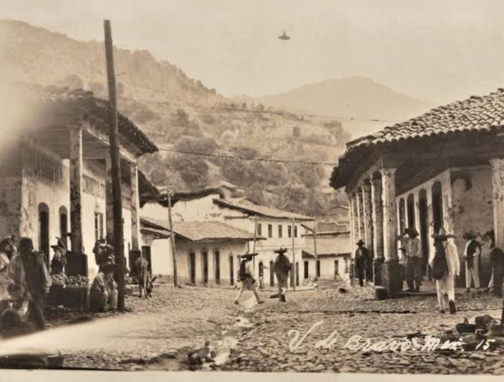

Valle de Bravo es un municipio ubicado al oeste del Estado de México.
Su historia se remonta a la época prehispánica, cuando estas tierras eran habitadas por diferentes pueblos indígenas, principalmente matlatzincas, mazahuas y otomíes.
Desde sus orígenes, esta región se caracterizó por sus abundantes recursos naturales, bosques, ríos y tierras fértiles.
Antes de la llegada de los españoles, la región era conocida como Pameje, nombre de origen mazahua.
Sus primeros habitantes se dedicaban principalmente a la agricultura, la pesca, la caza y el comercio. Posteriormente, el territorio quedó bajo el dominio mexica durante las conquistas de Axayácatl.
Valle de Bravo fue fundado el 15 de noviembre de 1530, con la llegada de los frailes franciscanos, quienes se encargaron de evangelizar a los habitantes. En ese periodo recibió el nombre de San Francisco del Valle de Temascaltepec.
A lo largo de los años, el municipio recibió diferentes nombres, como Villa del Valle. Finalmente, el 14 de noviembre de 1861, recibió oficialmente el nombre de Valle de Bravo, en honor al general Nicolás Bravo, personaje importante de la Independencia de México.
Durante la década de 1940 comenzó la construcción de la presa de Valle de Bravo, que formó parte del sistema hidroeléctrico Miguel Alemán.
>Esta obra transformó el paisaje y las actividades económicas de la región, ya que algunas tierras agrícolas quedaron inundadas. Posteriormente, el lago se convirtió en uno de sus principales atractivos turísticos.
Valle de Bravo es un lugar donde cada rincón conserva recuerdos de generaciones pasadas. Sus calles, construcciones y tradiciones son parte de una historia que continúa dando identidad a sus habitantes.
Mucho antes de convertirse en un destino turístico, estas tierras fueron hogar de pueblos indígenas que dejaron una importante huella cultural. Sus costumbres y conocimientos forman parte de la esencia de Valle de Bravo.
Caminar por Valle de Bravo es como viajar a otra época. Sus fachadas, balcones y techos de teja cuentan historias que han pasado de generación en generación.
Con el paso del tiempo, Valle de Bravo construyó una identidad propia, resultado de la mezcla de culturas, tradiciones y acontecimientos históricos que marcaron su desarrollo.
Valle de Bravo ha cambiado con el paso de los siglos. De ser una comunidad con raíces indígenas y actividades agrícolas, se convirtió en un importante destino turístico, sin perder por completo su esencia tradicional.
La historia de Valle de Bravo no pertenece solamente al pasado. También se escribe diariamente con sus habitantes, sus tradiciones y las personas que visitan este maravilloso lugar.
